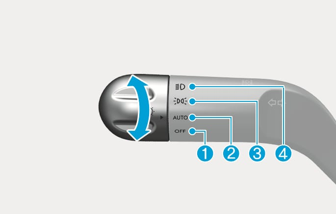
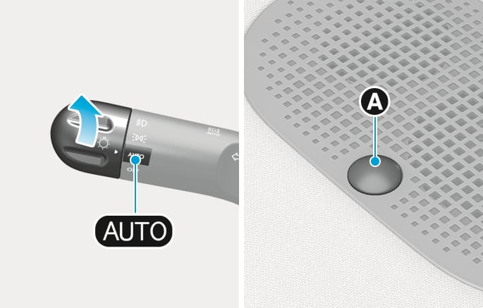
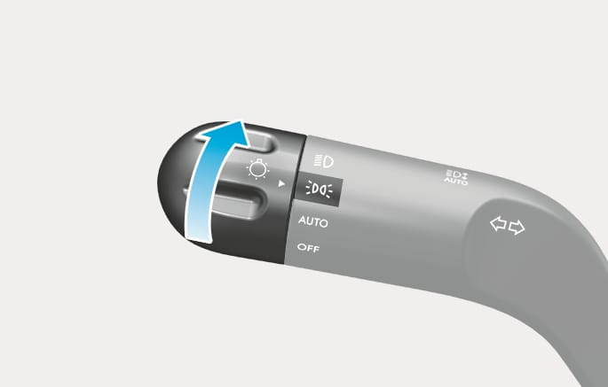
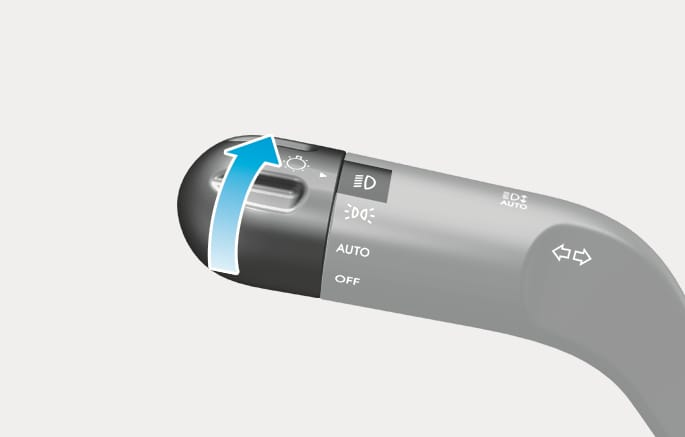

실외 조명 스위치
스위치를 돌려 실외 조명을 켜거나 끌 수 있습니다.

2C_LightSwitchOverview
-
OFF 조명 꺼짐
-
AUTO 자동 켜짐
-
_ 미등 켜짐 -
^ 전조등 켜짐
시동이 꺼진 상태로 조명을 켜 두지 마십시오. 배터리가 방전될 수 있습니다.

2C_LightSwitchAutoPosition
주행 중 또는 시동이 켜졌을 때('ON') 스위치를 AUTO 위치로 돌리면 대시보드의 일사량 감지 센서(A)가 감지한 외부 밝기에 따라 조명이 자동으로 켜지거나 꺼집니다.
-
자동 조명 기능은 운전자를 위한 보조 기능입니다. 안전을 위한 전조등 조작의 책임은 운전자에게 있습니다.
-
터널, 지하 주차장 등 어두운 장소나 악천후 환경과 같이 전방 시야 확보가 필요한 경우, 수동으로 전조등을 켜는 것을 권장합니다.
-
안개, 눈, 비 및 흐린 날씨에 차량의 조도는 항상 일정하지 않기 때문에 기후, 계절 주위 환경에 따라 켜지고 꺼지는 시간이 달라질 수 있습니다.
-
일사량 감지 센서 주변이나 하부에 다른 장치를 추가하지 마십시오. 일사량 감지 센서가 오동작하면 자동 조명 기능이 정상적으로 작동하지 않을 수 있습니다.
-
출고 상태와 다르게 실내 조도에 영향을 줄 수 있는 광차단 코팅 또는 선팅 필름을 붙일 경우 오작동할 수 있습니다.

2C_TailLampOn
스위치를

2C_HeadLampOn
주행 중 또는 시동이 켜졌을 때('ON') 스위치를